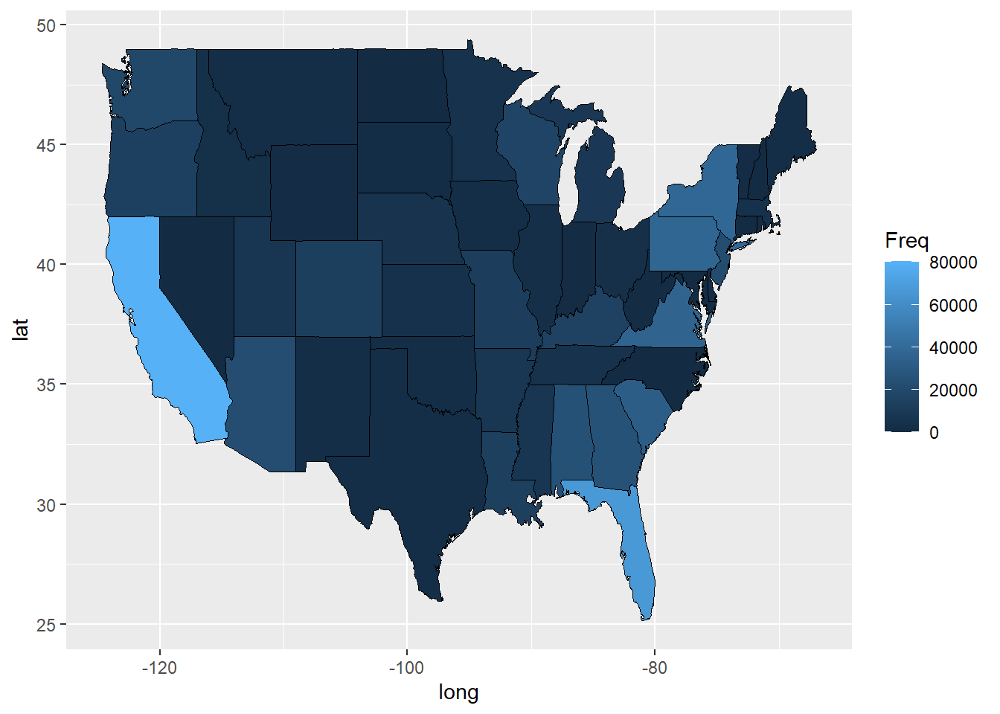

This data comes from the Centers for Disease Control and Prevention’s National Notifiable Diseases Surveillance System (NNDSS). Every week the CDC posts data received from the NNDSS system by the 50 states and US territories. This data set in particular was posted on 01.26.2023.
# Loading the raw data set.RawNNDSS <- readr::read_csv("data/NNDSS_Weekly_Data.csv")
Rows: 424130 Columns: 16
── Column specification ────────────────────────────────────────────────────────
Delimiter: ","
chr (9): Reporting Area, Label, Current week, flag, Previous 52 weeks Max, f...
dbl (7): Current MMWR Year, MMWR WEEK, Current week, Previous 52 week Max, C...
ℹ Use `spec()` to retrieve the full column specification for this data.
ℹ Specify the column types or set `show_col_types = FALSE` to quiet this message.
## Let's take a look...summary(RawNNDSS)
Reporting Area Current MMWR Year MMWR WEEK Label
Length:424130 Min. :2022 Min. : 1.00 Length:424130
Class :character 1st Qu.:2022 1st Qu.:11.00 Class :character
Mode :character Median :2022 Median :25.00 Mode :character
Mean :2022 Mean :25.13
3rd Qu.:2022 3rd Qu.:39.00
Max. :2023 Max. :52.00
Current week Current week, flag Previous 52 week Max
Min. : 1.0 Length:424130 Min. : 0.0
1st Qu.: 1.0 Class :character 1st Qu.: 0.0
Median : 3.0 Mode :character Median : 0.0
Mean : 107.5 Mean : 16.8
3rd Qu.: 16.0 3rd Qu.: 2.0
Max. :17162.0 Max. :31207.0
NA's :387848 NA's :54813
Previous 52 weeks Max, flag Cumulative YTD Current MMWR Year
Length:424130 Min. : 1
Class :character 1st Qu.: 2
Mode :character Median : 11
Mean : 1758
3rd Qu.: 74
Max. :1405282
NA's :297627
Cumulative YTD Current MMWR Year, flag Cumulative YTD Previous MMWR Year
Length:424130 Min. : 1
Class :character 1st Qu.: 2
Mode :character Median : 10
Mean : 2012
3rd Qu.: 75
Max. :1649210
NA's :283732
Cumulative YTD Previous MMWR Year, flag LOCATION1 LOCATION2
Length:424130 Length:424130 Length:424130
Class :character Class :character Class :character
Mode :character Mode :character Mode :character
sort_order geocode
Min. :2.022e+10 Length:424130
1st Qu.:2.022e+10 Class :character
Median :2.022e+10 Mode :character
Mean :2.022e+10
3rd Qu.:2.022e+10
Max. :2.023e+10
str(RawNNDSS)
spc_tbl_ [424,130 × 16] (S3: spec_tbl_df/tbl_df/tbl/data.frame)
$ Reporting Area : chr [1:424130] "US RESIDENTS" "NEW ENGLAND" "CONNECTICUT" "MAINE" ...
$ Current MMWR Year : num [1:424130] 2022 2022 2022 2022 2022 ...
$ MMWR WEEK : num [1:424130] 10 10 10 10 10 10 10 10 10 10 ...
$ Label : chr [1:424130] "Anthrax" "Anthrax" "Anthrax" "Anthrax" ...
$ Current week : num [1:424130] NA NA NA NA NA NA NA NA NA NA ...
$ Current week, flag : chr [1:424130] "-" "-" "-" "-" ...
$ Previous 52 week Max : num [1:424130] 0 0 0 0 0 0 0 0 0 0 ...
$ Previous 52 weeks Max, flag : chr [1:424130] "-" "-" "-" "-" ...
$ Cumulative YTD Current MMWR Year : num [1:424130] NA NA NA NA NA NA NA NA NA NA ...
$ Cumulative YTD Current MMWR Year, flag : chr [1:424130] "-" "-" "-" "-" ...
$ Cumulative YTD Previous MMWR Year : num [1:424130] NA NA NA NA NA NA NA NA NA NA ...
$ Cumulative YTD Previous MMWR Year, flag: chr [1:424130] "-" "-" "-" "-" ...
$ LOCATION1 : chr [1:424130] NA NA "CONNECTICUT" "MAINE" ...
$ LOCATION2 : chr [1:424130] "US RESIDENTS" "NEW ENGLAND" NA NA ...
$ sort_order : num [1:424130] 2.02e+10 2.02e+10 2.02e+10 2.02e+10 2.02e+10 ...
$ geocode : chr [1:424130] NA NA "POINT (-72.738288 41.575155)" "POINT (-69.06137 45.117911)" ...
- attr(*, "spec")=
.. cols(
.. `Reporting Area` = col_character(),
.. `Current MMWR Year` = col_double(),
.. `MMWR WEEK` = col_double(),
.. Label = col_character(),
.. `Current week` = col_double(),
.. `Current week, flag` = col_character(),
.. `Previous 52 week Max` = col_double(),
.. `Previous 52 weeks Max, flag` = col_character(),
.. `Cumulative YTD Current MMWR Year` = col_double(),
.. `Cumulative YTD Current MMWR Year, flag` = col_character(),
.. `Cumulative YTD Previous MMWR Year` = col_double(),
.. `Cumulative YTD Previous MMWR Year, flag` = col_character(),
.. LOCATION1 = col_character(),
.. LOCATION2 = col_character(),
.. sort_order = col_double(),
.. geocode = col_character()
.. )
- attr(*, "problems")=<externalptr>
Clean the Data
# Don't want to see anything outside the continental US...NoLocation <-c("DISTRICT OF COLUMBIA", "NEW YORK CITY", "AMERICAN SAMOA", "U.S. VIRGIN ISLANDS", "NORTHERN MARIANA ISLANDS", "GUAM", "PUERTO RICO")USChlamydia <- RawNNDSS %>%filter(Label =="Chlamydia trachomatis infection"&`Current MMWR Year`==2022)USChlamydia <- USChlamydia[ ! USChlamydia$LOCATION1 %in% NoLocation, ]# Grouping/sum by state...For_map <- USChlamydia %>%group_by(LOCATION1) %>%summarise(Freq =sum(`Current week`, na.rm =TRUE))# Renaming...prepping for joinFor_map <- For_map %>%mutate(region = LOCATION1)For_map <- For_map %>%select(region, Freq)# Map DataMainStates <-map_data("state")# Renaming...prepping for joinMainStates$region <-str_to_upper(MainStates$region)
Creating the plot(s)…
# Generating Plot ggplot() +geom_polygon(data = MainStates, aes(x = long, y = lat, group=group),color ="black", fill ="lightblue")
MergedStates <-inner_join(MainStates, For_map, by ="region")Map1 <-ggplot()Map1 <- Map1 +geom_polygon(data = MergedStates, aes(x = long, y = lat, group = group,fill = Freq), color ="black", linewidth =0.2)# View Map 1Map1

# Kind of want a different color schemeMap2 <- Map1 +scale_fill_gradient(name ="Cases of Chlamydia Reported in 2022",low ="yellow", high ="red",na.value ="grey") +theme(axis.text.x =element_blank(),axis.text.y =element_blank(),axis.ticks =element_blank(),axis.title.y =element_blank(),axis.title.x =element_blank(),rect =element_blank())# View Map 2Map2
While this isn’t the graph or the outcome that I would’ve liked. I did learn a lot about how the data are structured to generate these maps and merging them with your dataset. Initially, I was trying to use the leaflet() package and other variations that had a lot of easy-to-create interactive components, however, this was very difficult for me to do (I’ve removed my trials with these and kept the final. Trust me, you don’t want to see the mess I put myself through just to complete this assignment. Even if you wanted to see it, I’m still mad about it so it had to go). Now that I have a finished product and saw it through to the end, I think I’m going to try to create my initial vision I had. Completing this version brought some new details to light that would’ve helped to know when I first started this.